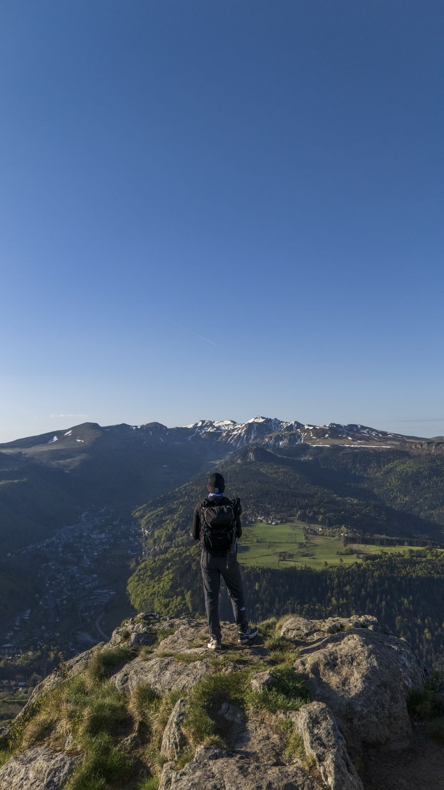

Lac Pavin — Monts Dore — 6 novembre 2026
Traverser la couche, et le Pavin apparaît.
Lac Pavin au drone — 6 novembre 2026Chaussures, sacs, vêtements portés en conditions réelles sur les crêtes des Monts Dore et de la Chaîne des Puys.
Vues aériennes des lacs de cratère, des arêtes et des mers de nuages, en photo et en vidéo.
Séries et carrousels pensés pour les réseaux, au format vertical, prêts à publier.
Accès à ma photothèque de paysages auvergnats pour vos usages éditoriaux et publicitaires.

Auvergnat, je photographie les paysages que je parcours à pied, sac sur le dos et drone dans la poche.
Mers de nuages sur le Cézallier, lac Pavin au lever, arêtes des Monts Dore au solstice, Chaîne des Puys sous le givre du 31 décembre : je raconte la randonnée comme on la vit. J'aide les marques à montrer leurs produits là où ils prennent tout leur sens, dehors.